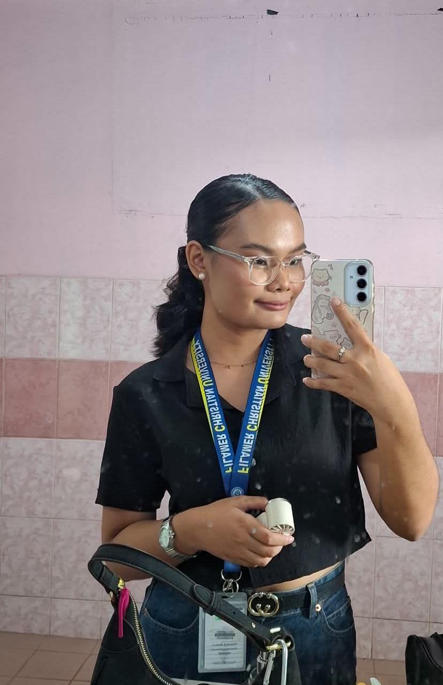
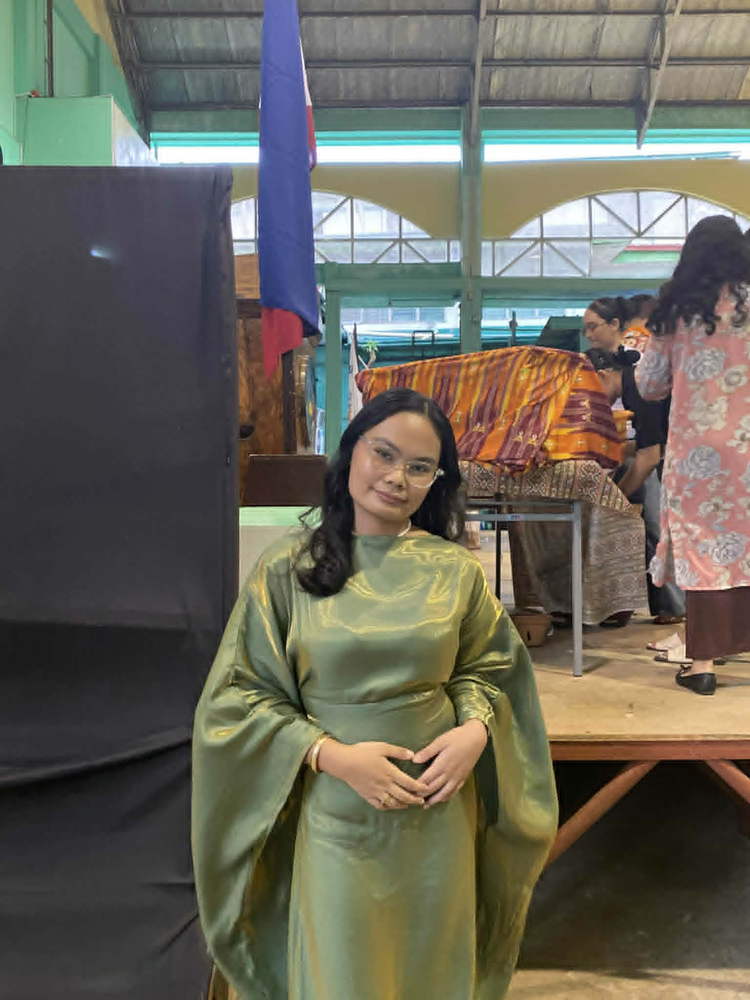

A young Filipina's journey of questioning gender identity through love and self-discovery — in the quiet spaces where traditional expectations meet an honest heart.

Dana is 19 years old, thoughtful by nature, and studying in a city where life moves quickly but self-reflection demands stillness. She has always felt something unnamed beneath the surface — a soft but persistent discomfort with the label she was given at birth: woman. Not a dramatic crisis, not a declaration — just a question, growing louder with every journal entry.
This story follows her introspective journey as she explores that question alongside something equally new: her first romantic relationship with a girlfriend. Together, these two threads — gender identity and love — weave a portrait of self-discovery unfolding in real time, inside a conservative Filipino family where such conversations rarely happen aloud.
It matters because Dana is not alone. Across the Philippines, young people are navigating the intersection of who they are and who their families, faith, and culture expect them to be. Her story is a window into that invisible, intimate process.
Shows the internal weight of traditional expectations and how they press against Dana's sense of self.
Dana's mornings begin with rituals she has performed for years without question: the way she ties her hair, the clothes laid out the night before, the reflexive greeting she gives her mother — Magandang umaga, Ma — in a voice that sounds like hers but sometimes feels borrowed.
It was not until she turned 18 that the question sharpened. A classroom discussion on SOGIE rights — the first of its kind she had encountered — introduced language she had no name for. Gender identity. Non-binary. Genderqueer. She wrote the words in the margins of her notebook and spent three nights reading about them alone in her room.

"I didn't feel wrong, exactly. I just felt like I was wearing clothes that almost fit. Close enough that no one else could see — but I could feel it every day."
— DanaAt home, gender is not a conversation — it is a given. Her father expects her to be gracious and soft-spoken. Her mother still calls her anak na babae with a warmth that Dana does not want to lose. These are not villains in her story; they are people she loves. That is precisely what makes the questioning so delicate, so slow.
She describes her daily life as a kind of double consciousness: the Dana who shows up to family dinners, who laughs at the right moments, who says oo po to questions she has not fully answered in her own heart — and the Dana who opens her journal at midnight and writes questions she cannot say aloud.
She met her girlfriend in a group chat for a school project. What began as shared notes and late-night voice messages became something neither of them had planned for. For Dana, falling in love with a woman did not resolve her questions about gender — it deepened them, beautifully.
"Being with her made me realize I had always been looking outward for who I was supposed to be," Dana says. "She never asked me to be anything. That was the first time I felt like I could just… sit with my questions without needing answers right away."
"She never asked me to be anything. That was the first time I felt I could sit with my questions without needing answers right away."
— Dana, on her relationshipJournaling became Dana's primary tool for processing. Not as a record of events, but as a conversation with herself — uncensored, unhurried. She writes in a mix of Filipino and English, the way her thoughts actually form, not the way she speaks to others.
She also found quiet solidarity among close friends who hold similar questions about identity. No formal support group — just a group chat, late-night calls, and the tacit understanding that some conversations are safer in that space than anywhere else.
Reveals how love and safe spaces help Dana understand herself — not by providing answers, but by making the questions feel safe to hold.
Highlights growth, resilience, and the quiet strength found in choosing authenticity — even without resolution.
Dana has not come out to her parents. She may not, for a long time — or ever, in the way that word implies a single definitive moment. What she has done is quieter and, she believes, more honest: she has stopped performing certainty she does not feel.
Small acts of courage look like this: answering "I'm still figuring it out" when a relative asks about her future. Wearing the clothes she feels comfortable in, not the ones that signal femininity most legibly. Letting herself be in love without explaining the nature of that love to people who haven't earned that conversation.
"I used to think I had to have an answer before I could be okay. Now I think the question itself is a kind of home. Somewhere I actually live."
— DanaShe hopes, one day, that the conversation in her family becomes possible — not because she needs their approval to be herself, but because she loves them and wants to be fully known by them. For now, that hope lives alongside the uncertainty, and she has made peace with that coexistence.
To others who are somewhere in the same questioning, Dana offers not a roadmap but a reassurance: "You don't have to arrive anywhere to be valid. The asking is already something brave."
Dana's discomfort with the label "woman" illustrates how gender is not a fixed biological fact but a social script — one that Filipino culture writes with particular force through family, religion, and language.
01The tension between Dana's private questioning and her family's expectations shows how deeply conservative environments shape — and sometimes suppress — the formation of authentic gender and sexual identity.
02Dana's story refuses to separate gender identity from romantic experience. Her relationship with a girlfriend becomes part of the larger process of knowing herself — showing that these identities are lived together, not in isolation.
03Ending · Reflection
— The lamp is still on. The journal is still open. The question is still a home.